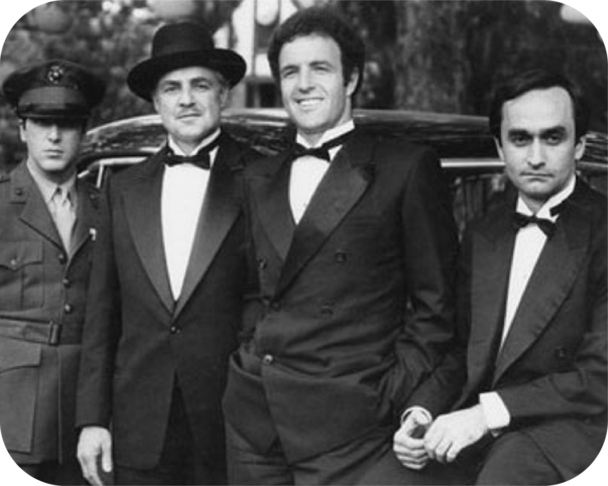

The Godfather follows the powerful Corleone crime family in post-WWII America. Don Vito Corleone, the respected and feared patriarch, oversees a vast criminal empire. When he refuses to enter the narcotics business, rival gangs attempt to assassinate him, plunging the family into war.
Vito’s hotheaded eldest son, Sonny, leads the retaliation, while his youngest, Michael, a war hero initially uninvolved in crime, is reluctantly drawn in. After an assassination attempt on his father, Michael kills a rival boss and a corrupt police captain, forcing him to flee to Sicily. While in exile, he marries a local woman, but she is killed in a car bombing meant for him.
Back in New York, Sonny is ambushed and brutally murdered. Vito, recovering from his wounds, brokers a fragile peace among the crime families. When Michael returns, he takes control of the Corleone empire, marrying his old love, Kay.
Vito dies of a heart attack, and Michael ruthlessly consolidates power. He orchestrates the murder of all enemies, including a treacherous brother-in-law, Carlo, who helped set up Sonny’s killing. In the final moments, Michael denies Kay’s desperate question about his involvement in the murders, as his men close the door on her, signifying his full transformation into the new Godfather.
The film portrays themes of power, loyalty, betrayal, and the inescapable nature of destiny, as Michael, once determined to be different, ultimately becomes even more ruthless than his father.
The problems with production on the 1971 set of The Godfather would require a textbook to compile. And given the timeless and hailed final product, it is truly a wonder that it was ever made. these are some of the issues encountered while filming: Paramount Pictures initially had reservations about casting Al Pacino and Marlon Brando, and nearly fired Francis Ford Coppola as director. The studio demanded repayment of development money for projects it had rejected, leading to financial instability for the production team. Brando put up a million-dollar bond to ensure he wouldn't cause problems. The Italian-American Civil Rights League, led by mobster Joseph Colombo, protested the film, fearing it would reinforce negative stereotypes of Italian-Americans. Producer Al Ruddy brokered a truce with Colombo, agreeing to remove the word "Mafia" and make other concessions. Studio executives initially opposed casting Marlon Brando as Don Corleone and Al Pacino as Michael, fearing their box office appeal. Francis Ford Coppola, the director, had to advocate strongly for Pacino, and the studio agreed only under the condition that James Caan play Sonny Corleone instead. Francis Ford Coppola nearly got fired several times during filming. He also reportedly made other actors wear his lines, and they said they couldn't understand what he was saying.
The enduring legacy of The Godfather is due to how the story reflects American values in the post-industrial revolution. The "family" as it is often referred to, is both the internal(the nuclear family), and the external(the gang).
The protaganist must negotiate both.
The father's three sons are the three aspects of his character - brutality, empathy, and intelligence. And the fathers success in both of his families, is due to his ability to balance these three aspects.
The brutality of business in the corporate world, the shrewdness of manipulation, and the true concern required to protect the family from encroaching threats, are the makeup of the father.
The son of brutality, Sonny, dies by the sword. The son of empathy, Fredo, dies from not undestanding, and the son of intelligence, Michael, rises in an intellectual furor that has him killing enemies, friends, and family; all because it made sense to do so.